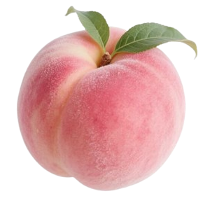
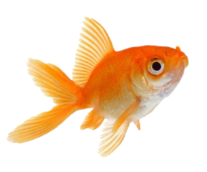
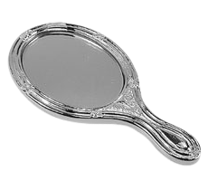
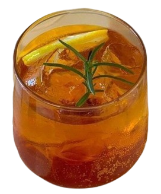
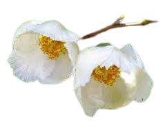

1. camouflage
3. box of goldfish
8. ego-ism
9. chastity atmidnight

7. the rat's-nest
8. link here
9. link here

1. camouflage
3. box of goldfish
8. ego-ism
9. chastity at
7. the rat's-nest
8. link here
9. link here